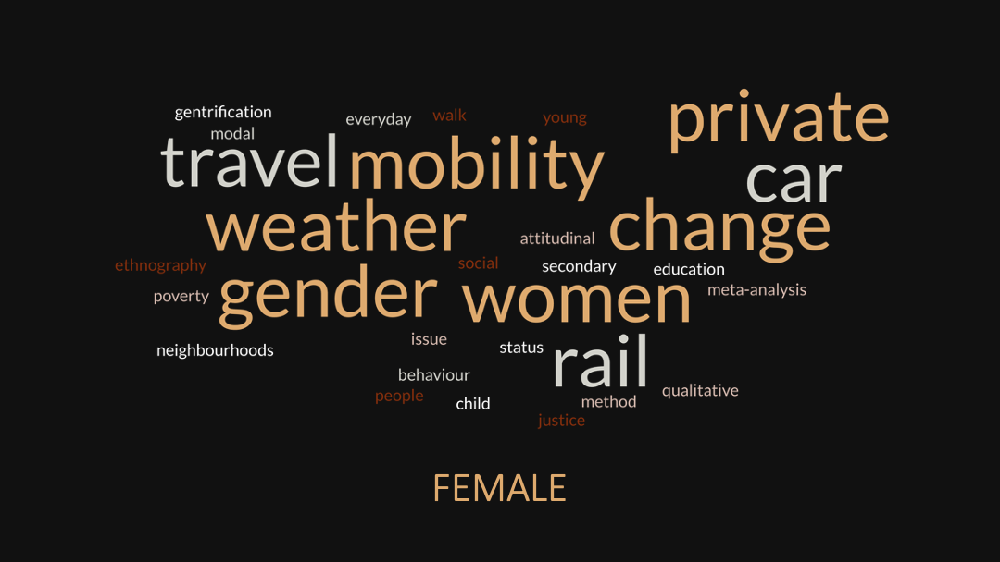
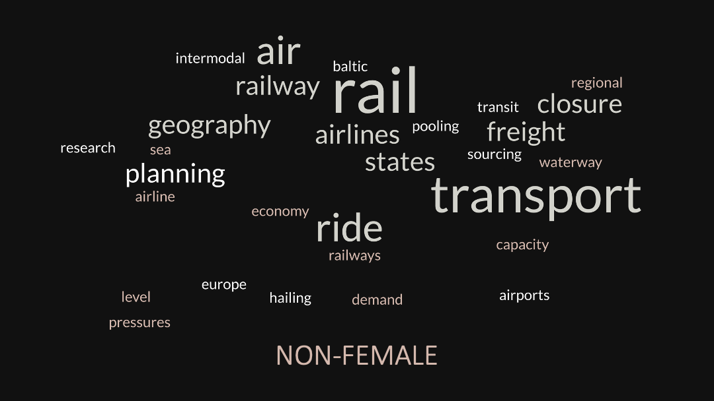

Capstone
Women in Transportation Geography
Spring 2024


Background & Methodology
This capstone project aims to reveal unique contribution of female-identifying researcher-led research in the field of transport geography.
The project focuses on Journel of Transport Geography, a well established academic journel in this field.
Three approaches were taken for topic analysis on female vs. non-female led research articles -
1) keyword frequency counts, 2) BERTopic, and 3) logistic regression.
The results show that female-led research help explore agencies’ subjective experience of transit,
and gender and social issues, in comparison to the objectivity and physicality of transportation that non-female research tend to focus on.

Women's Publication At A Glance
Since the journal’s establishment in 1995, we are witnessing an increasing trend of both number of overall articles and number of female-led articles. Among all articles, female-led research articles have an average page count of 9.22 pages (comparing to 9.13 in non-female), an average time cited at 40.99 (comparing to 39.59 in non-female), and an average number of authors at 2.89 (comparing to 2.65 in non-female). Overall, the stats demonstrate an increasing trend in female researchers’ involvement and a high quality of their work.

Results Summary
The composite results from 3 approaches are synthesized and summarized in word cloud on the right. In conclusion, female-led research articles are bringing in human-centric perspectives, qualitative research methods, and attention to subjective experiences of agencies traveling into the field of transportation geography, which would otherwise be missing, as non-female researchers tend to focus more on the physical infrastructure and larger network systems as opposed to individual’s experience.